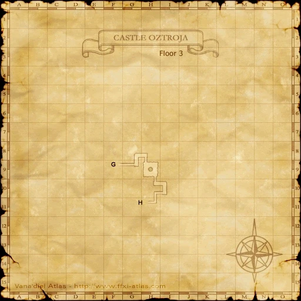

Level 75 reference · Zenith rules
|
Walkthrough


Image source
- Talk to Perih Vashai and watch a cutscene where she tells you that there is information to be had in Mhaura regarding the Traitor's Daughter and that the Mithra Tracker has already left to follow up on it. You are then sent to Mhaura to talk to Koh Lenbalalako (F-9 Blacksmiths' Guild) for more information.
- Once you speak to Koh Lenbalalako, another cutscene ensues, which directs you to Eldieme Necropolis.
- Enter Eldieme Necropolis and watch another cutscene in which the Mithra Tracker wants you to go ahead of her and "clear the way" to the tombstone (southernmost G-9 of 4 chambers in the Eldieme Necropolis area accessible from I-10 in Batallia Downs.)
- Note: You may need someone to switch the doors for you depending on which pathway is open to reach the tombstone.
- Examine the Gravestone (in a small hallway off the north side of the southernmost chamber), watch the cutscene, and then leave Eldieme Necropolis.
- Note that the Azer near the tombstone will aggro by sight.
- Go back to Windurst and talk to Perih Vashai once more where you will see another cutscene, which directs you to Castle Oztroja to find an Old Earring.
- When you get to Castle Oztroja you need to go past the first doorway with the trapdoor and proceed up to the 4 lever door at the SW corner of G-8. You can find the combination to the door at the dead-end at (I-10).
- Once inside this doorway proceed all the way up the stairs to a chamber with a pool in the middle of it. This pool will be surrounded by Yagudo and full of Yagudo Parasites.
- The leeches aggro by sound and the Yagudo aggro by sight.
- Run into the pool and when no Yagudo are looking, Scavenge, Camouflage, and run back out of the room to the safety of the hallway.
- You may not get the Old Earring the first try. If you do not get it, wait 5 minutes, reapply sneak and invisible and repeat.
- If you have a high level job, you can set Ranger as your subjob and still get the item using Scavenge; a more practical solution than spending a lot of money on stealth medicines.
- Return to Perih Vashai in Windurst and trade her the Old Earring for a final cutscene and your reward.
Game Description
Client: Perih Vashai (Vashai's residence, Windurst Woods)
Summary:Go to Mhaura and meet Koh Lenbalalako. It is said that she knows the whereabouts of the sinner's daughter.
Adapted from Eden Wiki: Fire and Brimstone · Contributors and history · CC BY-SA 4.0. Revision 9317. Layout, links and optional background text adapted for Zenith.